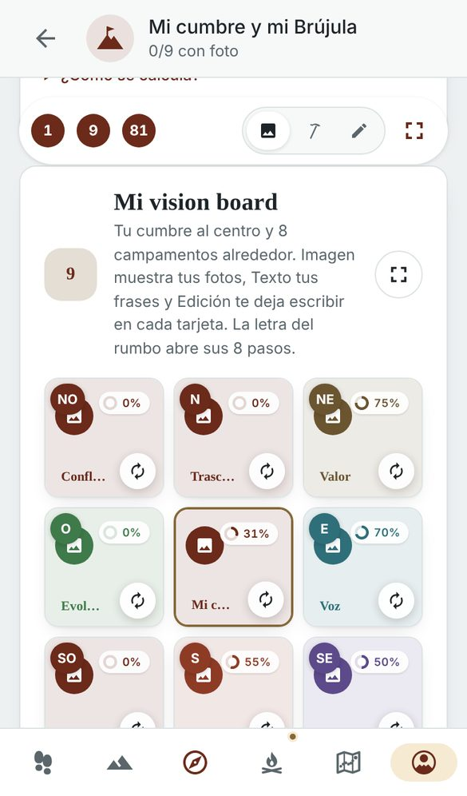
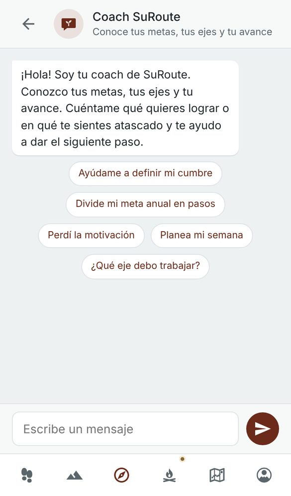

Tu vida es la montaña.
Cada día es un paso.
SuRoute es la red social donde se aplaude el progreso, no la apariencia. Escribe tu cumbre, da el paso de hoy y sube con personas que te impulsan.
Android, iPhone, computador y web. La misma cuenta en todos lados.
Mira SuRoute en un minuto
Y en 20 segundos
El símbolo de SuRoute recorre la app: tu día, tu vida en años, tu Brújula de la Cima, la comunidad que aplaude el progreso y tu dinero como una cordillera.
Vertical, para compartir en Reels, TikTok o Shorts.
Descargar el videoUna cumbre clara
Escribe hacia dónde va tu vida y conviértelo en tu Brújula de la Cima: tu cumbre al centro, 8 campamentos y 64 pasos pequeños. Una general para toda la vida y una para cada año.
- Vision board con tus propias fotos
- El 9×9 con tus pasos, del sueño a la jornada
- Compártela y explórala de la cumbre al detalle

El paso de hoy
Abre la app, mira tu frase del día, marca tus hábitos y avanza un paso. Menos de un minuto. Si un día caes, no se borra el ascenso: vuelves mañana sin culpa.
- Hábitos de tus seis ejes
- Metas del mes que se ven avanzar
- La frase sellada que se abre cada día
No subes solo
En Cimas ves los pasos reales de otras personas, a pantalla completa. Les das impulso, les comentas y te unes a los retos del mes. Y tu muro tiene final: cuando ya viste lo nuevo, te invita a volver a tu ruta.
- Retos de la comunidad, un día a la vez
- Cordadas: grupos pequeños con un reto compartido
- Avisos cuando alguien te impulsa o te responde
Un coach a tu lado
El coach de SuRoute conoce tu cumbre, tus metas y tus ejes. Te ayuda a dividir una meta en pasos, a planear la semana o a volver cuando pierdes el impulso. Y si quieres, un coach de vida verificado te acompaña.

Tu vida en años
Cada año es nuestro símbolo. Los vividos, en tinta; este año, en oro; los que vienen, por escribir. Cuando un año tiene metas, su punto del sur se enciende.
Privada por diseño
Tu ruta es tuya. Tú decides quién ve cada paso.
Sin publicidad
No vendemos tus datos ni mostramos anuncios.
Tú eliges quién ve
Cada publicación puede ser pública, para tus seguidores o solo para ti.
Control de verdad
Silencia, bloquea o reporta en dos toques, y decide quién puede comentarte.
Protección para jóvenes
De 14 a 17 años, lo publicado llega solo a sus seguidores y solo les escribe quien siguen.
Lo que nos hace distintos
- Aplaudimos el progreso, no la apariencia. Cada publicación nace de un paso real de tu ruta: una meta, una evidencia, un recuerdo.
- Tu muro tiene final. No buscamos que te quedes; buscamos que vuelvas a tu montaña.
- Hay un método detrás. Ruta a la Cima: cumbre, ejes, Brújula 9×9 y el ritmo de 52 semanas.
- Tus datos no son el producto. Sin anuncios, sin venta de datos y con tu cuenta eliminable cuando quieras.
Nuestro símbolo: el sur en el interior
Un círculo abierto al sur y un punto en el hueco. El punto de partida, la base y un camino que empieza desde adentro hacia afuera.
- Máxima simplicidad
- Cumple la regla de «menos es más». El círculo con su punto inferior es limpio y fácil de recordar; no hay nada que distraiga.
- Escalabilidad
- Se ve nítido y reconocible en un cartel grande, en el ícono más pequeño de la app o en la pestaña del navegador.
- Un concepto ingenioso
- Al quitar la montaña y dejar el círculo con el punto al sur, en el interior, transmite punto de partida, ubicación y base, sin ser obvio ni caer en el cliché. Es una metáfora visual elegante y única.
- Tipografía acertada
- La letra sin serifa de «SuRoute» y «SUMMIT ROUTE» es moderna, limpia y geométrica, y acompaña la estética mínima del símbolo.
- Una marca con alma
- Proyecta sofisticación: podría ser una marca de tecnología, de bienestar o de equipo de expedición. No se siente como una app genérica, sino como un producto pensado.
Comunica dirección, origen y propósito de forma abstracta y poderosa. No hay nada que añadir ni quitar.
Empieza tu ascenso hoy
Escribe tu cumbre en menos de tres minutos. El primer paso es mañana.